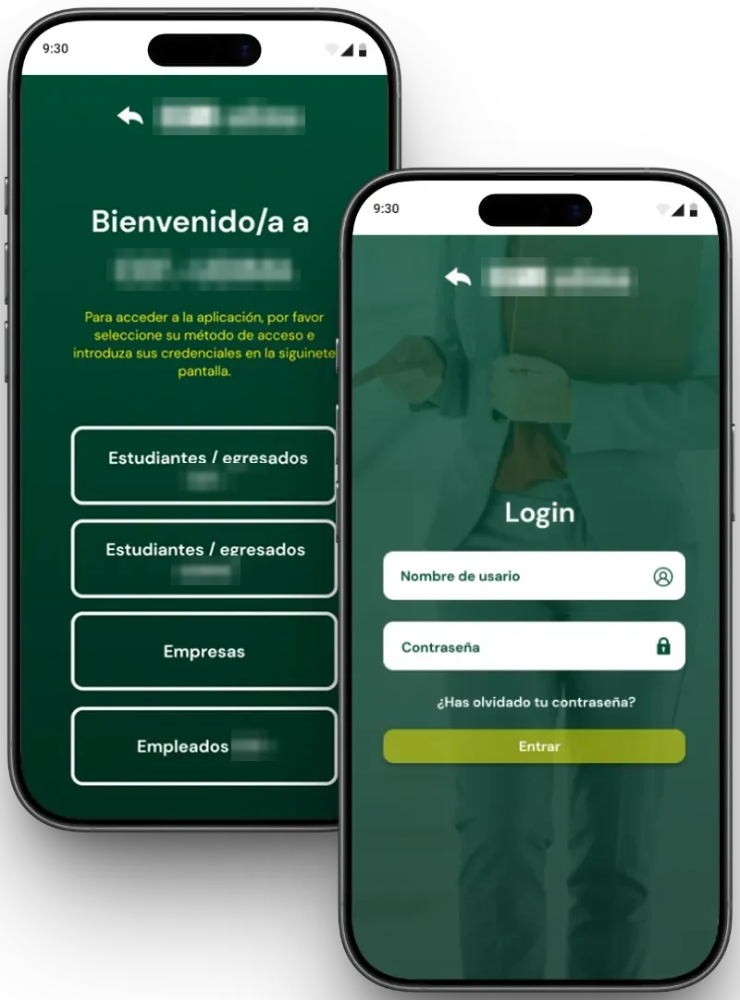
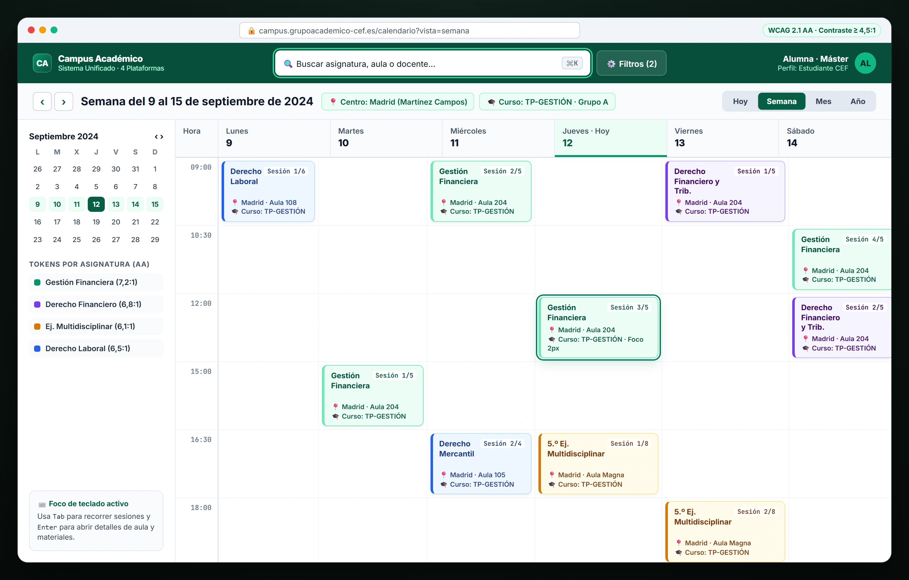
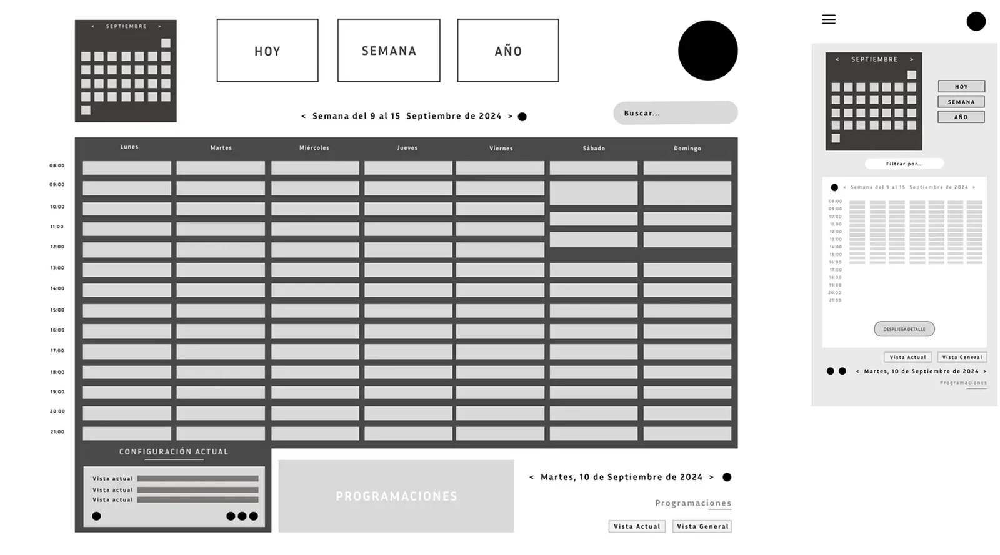
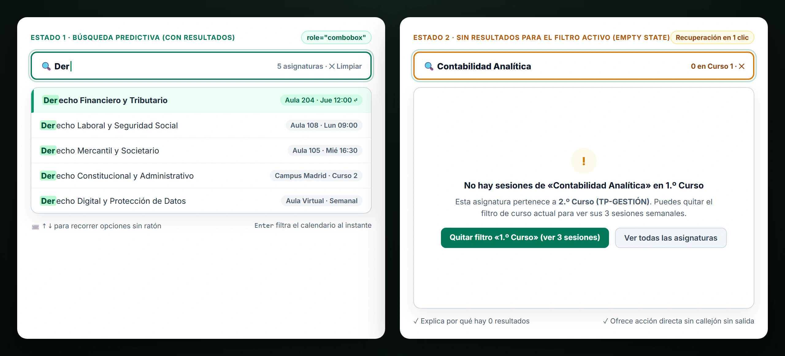
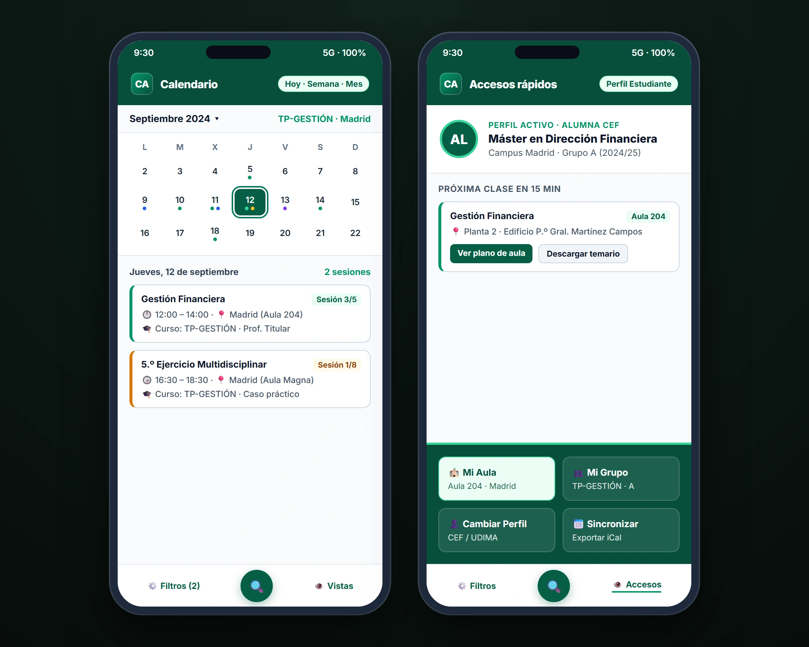
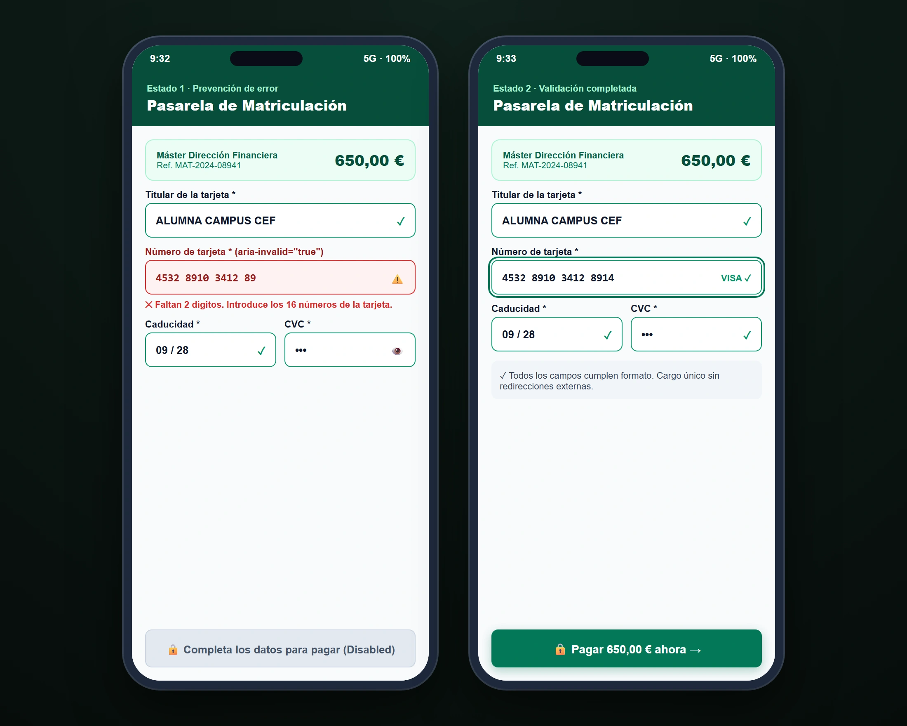
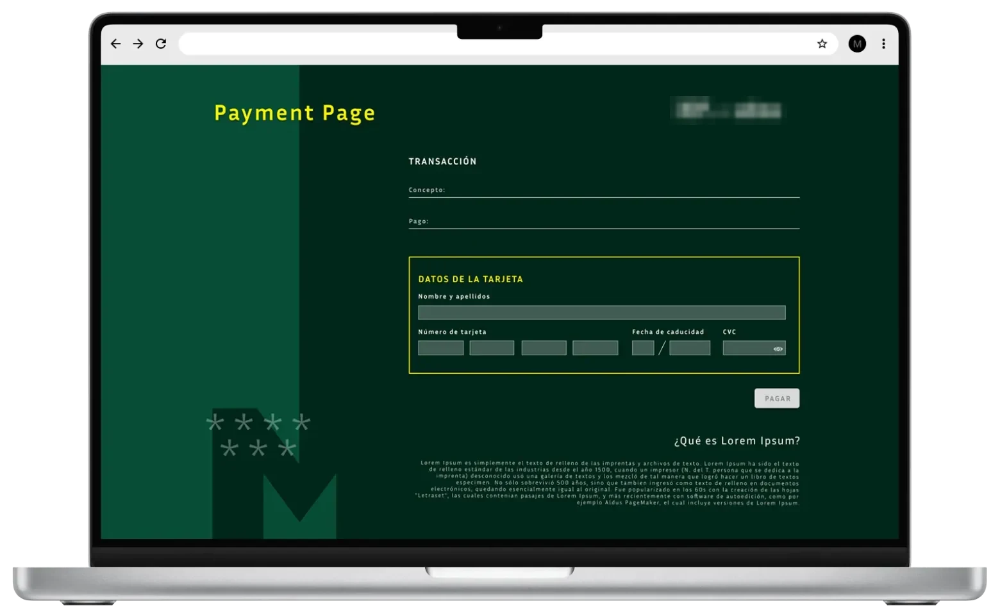
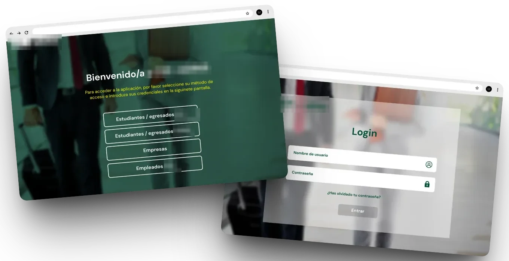

01 · Entrar01 · Log in
Sep 2024 – Actualidad · En producción. Optimización de la conversión del canal directo: motor de reservas y home recompuesta.
Sep 2024 – Present · In production. Direct-channel conversion optimisation: booking engine and recomposed homepage.
Jun–Sep 2024 · Rev. 2026. Auditoría de 47 componentes, 17 construidos y criterios WCAG 2.1 AA en los flujos evaluados.
Jun–Sep 2024 · Rev. 2026. 47 components audited, 17 built, and WCAG 2.1 AA criteria applied to the audited flows.
2022–2024 · Rev. 2026. Propuesta Build vs. Buy, no implementada: 56,5 h/mes de trabajo manual medidas.
2022–2024 · Rev. 2026. Build vs. Buy proposal, not implemented: 56.5 h/month of manual work measured.
Bootcamp 2024 · Rev. 2026. UX research en un equipo de 8: 12 entrevistas sobre por qué los socios abandonan.
Bootcamp 2024 · Rev. 2026. UX research in a team of 8: 12 interviews on why members drop out.
2020–2022 · Rev. 2026. Marca, carta QR y web de pedidos propia: +28% en pedidos directos online.
2020–2022 · Rev. 2026. Brand, QR menu and in-house ordering site: +28% direct online orders.
CEF quería organizar en digital sus clases, cursos y asignaturas. Diseñé el sistema de diseño que sostiene esa herramienta nueva y todo lo que la rodea.CEF wanted to organize its classes, courses and subjects digitally. I designed the design system that powers that new tool and everything around it.

Campus virtual, bolsa de empleo, pasarela de matriculación y calendario académico se construyeron en años distintos y con proveedores distintos. El alumno, que además es cliente, cruzaba varias de ellas para hacer una sola cosa.Virtual campus, job board, enrollment gateway and academic calendar were built in different years by different vendors. The student, who is also a customer, crossed several of them to do one single thing.
El sistema tenía que servir igual a quien entra a estudiar y a quien entra a pagar: alumnos CEF, alumnos UDIMA, empresas y empleados, cada uno con permisos distintos sobre el mismo calendario.The system had to serve both the student and the payer equally: CEF students, UDIMA students, companies and staff, each with different permissions on the same calendar.
«Si cada app es distinta, aprendo cuatro veces lo mismo.»“If every app is different, I learn the same thing four times.”
Persona ilustrativa · Ilustración generada con IAIllustrative persona · AI-generated illustration«Si la pasarela parece otra web, no meto la tarjeta.»“If the gateway looks like another site, I won’t enter my card.”
Persona ilustrativa · Ilustración generada con IAIllustrative persona · AI-generated illustration«Antes de entrar al aula necesito saber dónde y con quién.»“Before I walk in, I need to know where and with whom.”
Persona ilustrativa · Ilustración generada con IAIllustrative persona · AI-generated illustrationUn sistema de diseño es un contrato operativo entre diseño, accesibilidad y desarrollo.A design system is an operating contract between design, accessibility and engineering.
Tres capas de tokens. Cambiar un valor arriba actualiza el login, el calendario y el pago a la vez.Three layers of tokens. Changing one value upstream updates login, calendar and payment at once.
17 componentes construidos tras auditar 47, cada uno con sus estados. El foco visible vuelve a existir: anillo de 2px con separación, para quien navega con teclado.17 components built after auditing 47, each with its states. Visible focus is back: a 2px ring with offset for keyboard users.
La herramienta nuevaThe new tool

Búsqueda predictiva de asignaturasPredictive subject search


Un sistema es un producto vivoA system is a living product
La accesibilidad es estructuralAccessibility is structural
Se diseña también para desarrolloYou also design for engineering
Prototipo en vivo del calendario con el Design System WCAG 2.1 AA aplicado. Live prototype of the academic calendar with WCAG 2.1 AA Design System applied.

CEF quería organizar en digital sus clases, cursos y asignaturas. Diseñé el sistema de diseño que sostiene esa herramienta nueva y todo lo que la rodea.CEF wanted to organize its classes, courses and subjects digitally. I designed the design system that powers that new tool and everything around it.
de contraste en textos y botones críticos, en 4 plataformas sin nada en común.contrast on text and critical buttons, across 4 platforms with nothing in common.
Diseñar las reglas antes que las pantallas, para que login, calendario y pago hablen igual.Design the rules before the screens, so login, calendar and payment speak the same language.
Auditoría de accesibilidad y criterios WCAG 2.1 AA aplicados en los tres flujos evaluados: acceso, organización académica y pago.Accessibility audit and WCAG 2.1 AA criteria applied to the three audited flows: access, academic organisation and payment.
Campus virtual, bolsa de empleo, pasarela de matriculación y calendario académico se construyeron en años distintos y con proveedores distintos. El alumno, que además es cliente, cruzaba varias de ellas para hacer una sola cosa.Virtual campus, job board, enrollment gateway and academic calendar were built in different years by different vendors. The student, who is also a customer, crossed several of them to do one single thing.
Un sistema de diseño es un contrato operativo entre diseño, accesibilidad y desarrollo.A design system is an operating contract between design, accessibility and engineering.
Textos secundarios y botones críticos por debajo de 4,5:1.Secondary text and critical buttons below 4.5:1.
Más de 8 variantes de botón y campo en producción.More than 8 button and field variants in production.
El foco (:focus-visible) estaba suprimido.Focus (:focus-visible) was suppressed.
El sistema tenía que servir igual a quien entra a estudiar y a quien entra a pagar: alumnos CEF, alumnos UDIMA, empresas y empleados, cada uno con permisos distintos sobre el mismo calendario.The system had to serve both the student and the payer equally: CEF students, UDIMA students, companies and staff, each with different permissions on the same calendar.
«Si cada app es distinta, aprendo cuatro veces lo mismo.»“If every app is different, I learn the same thing four times.”
Persona ilustrativa · Ilustración generada con IAIllustrative persona · AI-generated illustration«Si la pasarela parece otra web, no meto la tarjeta.»“If the gateway looks like another site, I won’t enter my card.”
Persona ilustrativa · Ilustración generada con IAIllustrative persona · AI-generated illustration«Antes de entrar al aula necesito saber dónde y con quién.»“Before I walk in, I need to know where and with whom.”
Persona ilustrativa · Ilustración generada con IAIllustrative persona · AI-generated illustrationTres capas de tokens. Cambiar un valor arriba actualiza el login, el calendario y el pago a la vez.Three layers of tokens. Changing one value upstream updates login, calendar and payment at once.
17 componentes construidos tras auditar 47, con hover, focus, disabled y active especificados con sus props, en la misma estructura que usa frontend. El foco visible vuelve a existir: anillo de 2px con separación, para quien navega con teclado.17 components built after auditing 47, with hover, focus, disabled and active specified as props, in the same structure frontend uses. Visible focus exists again: a 2px ring with offset, for keyboard navigation.
Alumnos CEF, alumnos UDIMA, empresas y empleados.CEF students, UDIMA students, companies and staff.
Clases del mes, perfil y accesos a aula y grupo.Classes for the month, profile and access to classroom and group.
Concepto, importe y tarjeta en un solo bloque.Concept, amount and card in one block.
Diseñar reglas y tokens antes que pantallas evita rehacer el mismo componente en cada flujo.Designing rules and tokens before screens avoids rebuilding the same component in every flow.
Integrar contraste y navegación asistiva desde el token evita parches costosos a posteriori.Building contrast and assistive navigation into tokens avoids costly patches later.
Un buen sistema habla la sintaxis de los desarrolladores; nombrar bien los tokens ahorra muchas conversaciones.A good system speaks the developers' language; clear token names save a lot of back-and-forth.
Explora el prototipo interactivo del calendario académico, construido con el Design System, sus tokens y sus componentes, aplicando criterios WCAG 2.1 AA. Explore the interactive prototype of the academic calendar, built with the design system, its tokens and components, applying WCAG 2.1 AA criteria.

De la investigación cualitativa inicial al diseño que mueve métricas de negocio y a los sistemas a escala.From early qualitative research to design that moves business metrics and to systems at scale.